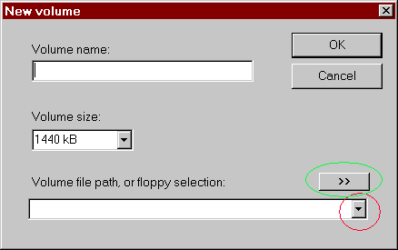
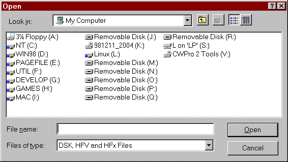
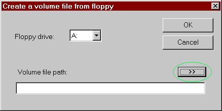
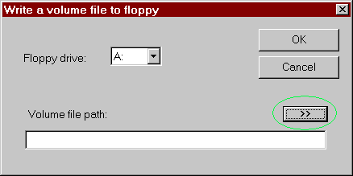

Format a new volume file:This command is used for two purposes: to format a new HFV volume file, or to format a floppy disk. You will see a dialog box like this:

First enter a name for your new volume. It must be at most 27 characters long, and may not contain colons (":") or backslashes ("\").Select the volume size next. Open the combo box to see some preconfigured sizes. However, you are not required to stick with those, but can enter any size you like (between 800k and 2GB). Just type "57MB" (without quotes) to format a 57 megabyte volume file.
To format a floppy, click on the combo-box highlighted with a red circle, and select the floppy drive -- either A: or B:. To format a volume file, click on the button indicated with green ellipse.
When you are ready, click OK to start the process. It will take a while, and there's no proper progress indicator at the moment, but you will no doubt notice when the new volume is ready: the hard disk (or floppy) stops making noise and HFVExplorer mounts the new volume.
There is an alternative way to format a volume file: right-click an empty space in Windows Explorer. Select New/HFVExp Document. Double-click the new document. HFVExplorer will launch, prompt the name and the size of the file, and format it.
Opens ("mounts") a new volume file. If you have all your volume files in the same directory as HFVExplorer itself, you will rarely need this command. HFVExplorer mounts all the HFV, DSK and HFx files from the startup directory automatically.You will presented with a Windows common file open dialog:

Nothing special here, just browse to the volume file and open it. You can also drag and drop an HFV file from Windows Explorer.
If you have Macintosh formatted 1.4MB floppies, you can mount them to HFVExplorer and access the files directly. This works fine but is rather slow. Instead, you may want to create a new HFV file from the contents of the floppy disk. This command does just that.

Select the source floppy drive (A: or B:), and type in the full path of the new volume file. You can also use the browse button indicated with green ellipse to browse to a desired folder and file name.Again, click OK to start the operation. It is not particularly fast but has the ability to recover from some floppy read errors. The new volume will be mounted automatically after the operation is finished.
This command writes a volume file to a floppy disk. The file must be 1.4 MB or less. Select the target floppy drive (A: or B:), and use the browse button indicated with green ellipse to browse to the desired source volume file.
This command is actually not in file menu, but should be. It reloads the CD tray, if open. Just for fun.Eject CD tray:This command is actually not in file menu, but should be. It ejects the CD tray if it's closed. Just for fun.Print (not implemented):Not much need for this, will probably disappear.Recent files:HFVExplorer keeps track of ten recently mounted files in the file menu. Provided that the file has not been deleted or moved, selecting the file name mounts it.